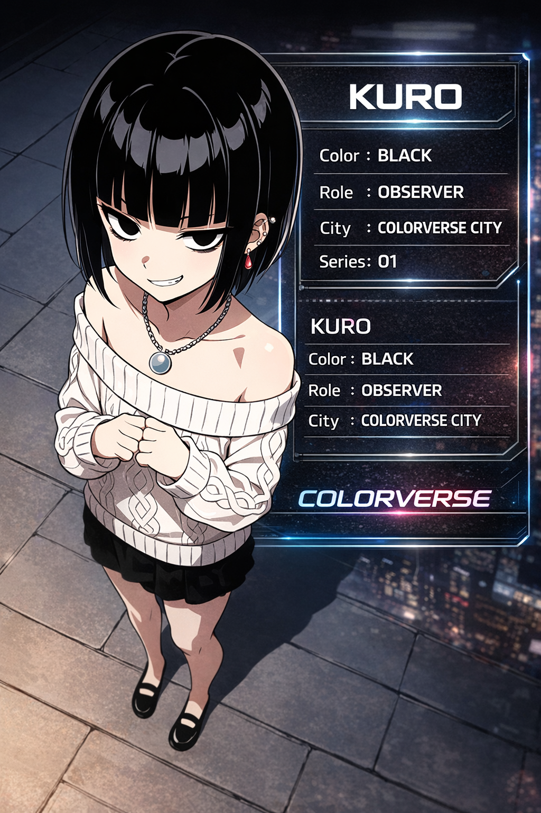
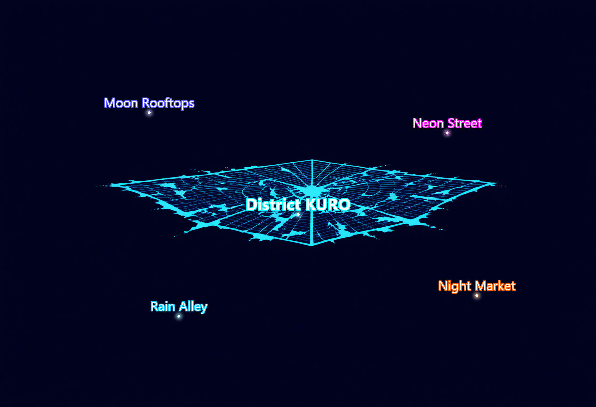
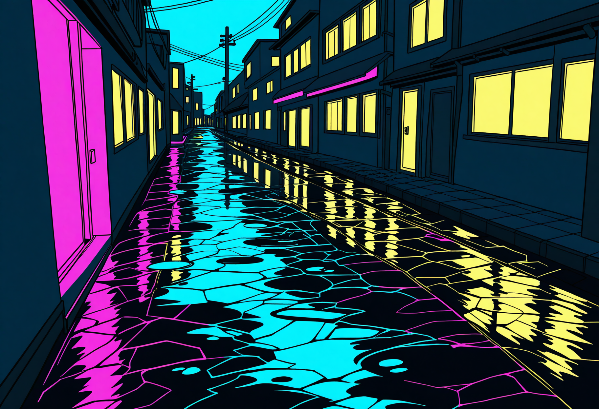

COLORVERSE Project Launch
COLORVERSEは
「すべての色が少女になる」ビジュアルプロジェクトです。
シリーズ第1弾として
黒をテーマにした少女「KURO」が登場します。
公開日
2026年3月22日

COLORVERSEは、決して眠ることのない巨大なサイバー都市。ネオン街、月明かりの屋上、静寂の路地裏が織りなす世界には、地区ごとに異なるキャラクターたちが存在しています。
それぞれのキャラクターは異なる『色』を象徴し、異なる視点からこの都市を見つめています。
Series 01 : KURO - Night Collection

Kuroは、COLORVERSEの街を静かに観察しています。
彼女の静かな視線の奥には、わずかな不穏さが隠されています。影の中から都市を見つめながら、彼女は静寂の夜を歩き続けます。
COLORVERSE CITYの地区と環境を探索する。
色が形を成すネオンの巨大都市。

中央サイバー地区のレイアウト。

Kuroが現れる静寂の地区。
広がりゆくCOLORVERSEの物語。
COLORVERSEの最初の物語。夜の都市の静かな観察者。静寂の都市世界に佇む、穏やかな存在。
COLORVERSEに近日追加予定。
COLORVERSEに近日追加予定。
COLORVERSEは
「すべての色が少女になる」ビジュアルプロジェクトです。
シリーズ第1弾として
黒をテーマにした少女「KURO」が登場します。
公開日
2026年3月22日
COLORVERSE CITYのマップデータと環境ビジュアルがアーカイブに追加されました。
Series 01 : KURO – Rain Night がNight Collectionギャラリーに追加されました。
将来的な拡張に向けてコアとなるドメイン構成を準備しました。多言語対応（日英）を開始しました。